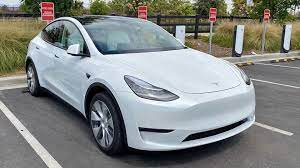
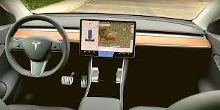

 
Tesla Y, характеристики Standart оснащается электрической силовой установкой, с помощью которой можно от 0 до 100 км/ч разогнаться за 6,3 секунды, максимальная скорость 193 км/ч. Заднеприводная Long Range разгоняется до 100 км/ч за 5,8 секунды, максимальная скорость ограничена электроникой, и составляет 209 км.